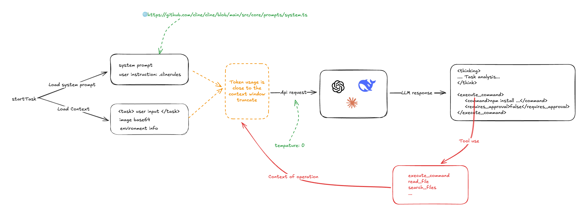

AI Coding 编辑器没有那么神秘 - How Cline works
没想到，AI 在编程领域掀起了半变天。从 v0 、bolt.new 再到各类结合 Agant 的编程工具 Cursor、Windsurf，AI Coding 已经具备 idea MVP 的巨大潜力。从传统的 AI 辅助编码，到如今的直接项目生成的背后，到底是怎么实现的？
本文会从开源产品 Cline 开始，从中窥探现阶段 AI Coding 产品的一些实现思路。同时了解更深层的原理，也能更好地使用 AI 编辑器。
各个 AI Coding 编辑器的最终实现可能不太一致。另外，本文也不会深入到 Tool Use 的实现细节。
Cline 整体的流程我画了一张草图：

Cline 的核心是依赖系统提示词以及大语言模型的指令遵循能力。在编程任务启动的时，收集系统提示词、用户自定义提示、用户的输入、以及所在项目的环境信息（哪些文件、打开的 Tab 等等），提交给 LLM。LLM 按照指令输出解决方案和操作。Cline 通过解析返回的操作指令（比如 <execute_command />、<read_file />），调用编写好的 Tool Use 能力进行处理，并将处理结果交给 LLM 处理。Cline 会多次调用 LLM 来完成单次任务。
系统提示词#
Cline 的 系统提示词 是类 v0 提示词，使用 Markdown 和 XML 编写。其中详细定义了 LLM Tool Use 规则和用法示例：
# Tool Use Formatting
Tool use is formatted using XML-style tags. The tool name is enclosed in opening and closing tags, and each parameter is similarly enclosed within its own set of tags. Here's the structure:
<tool_name>
<parameter1_name>value1</parameter1_name>
<parameter2_name>value2</parameter2_name>
...
</tool_name>
For example:
<read_file>
<path>src/main.js</path>
</read_file>
Always adhere to this format for the tool use to ensure proper parsing and execution.
# Tools
## execute_command
## write_to_file
...
## Example 4: Requesting to use an MCP tool
<use_mcp_tool>
<server_name>weather-server</server_name>
<tool_name>get_forecast</tool_name>
<arguments>
{
"city": "San Francisco",
"days": 5
}
</arguments>
</use_mcp_tool>
MCP 服务器也会注入系统提示词中。
MCP SERVERS
The Model Context Protocol (MCP) enables communication between the system and locally running MCP servers that provide additional tools and resources to extend your capabilities.
# Connected MCP Servers
...
用户指令也可以通过 .clinerules 注入到系统系统提示词中。
从这我们可以大胆推测，Cursor 和 WindSurf 注入 .cursorrules 也是类似的
由此可以看出，Cline 核心是依赖 LLM 的指令遵循能力，因此模型的 temperature 被设置成了 0。
const stream = await this.client.chat.completions.create({
model: this.options.openAiModelId ?? "",
messages: openAiMessages,
temperature: 0, // 被设置成了 0
stream: true,
stream_options: { include_usage: true },
})
第一轮输入#
用户存在多种输入，分别有：
- 直接输入的文案，用
<task />包含 - 通过
@输入的文件目录、文件和 url
在 Cline 中，@ 没有什么太多的科技含量，对于文件目录，列出文件目录结构；文件，读取文件内容；url，则直接 puppeteer 读取内容。然后把这些内容和用户输入，输出给 LLM。
一个示例输入如下：
<task>实现一个太阳系的 3D 环绕效果 'app/page.tsx' (see below for file content) 'https://stackoverflow.com/questions/23673275/orbital-mechanics-for-a-solar-system-visualisation-in-three-js-x-y-z-for-planet' (see below for site content)
</task>
<file_content path="app/page.tsx">
import Image from "next/image";
export default function Home() {...}
</file_content
<site_content>
...
</site_content>
用户输入还包含一类信息，就是项目环境信息，有当前的工作目录的文件列表、vscode 打开的 tab 等等。
一个简单的任务给 LLM 的输入如下：
<task>
实现一个太阳系的 3D 环绕效果
</task>
<environment_details>
# VSCode Visible Files
(No visible files)
# VSCode Open Tabs
(No open tabs)
# Current Time
1/23/2025, 4:41:03 PM (Asia/Shanghai, UTC+8:00)
# Current Working Directory (/Users/nazha/nazha-all/cline-dev/nazha) Files
.gitignore
eslint.config.mjs
next.config.ts
package-lock.json
package.json
postcss.config.mjs
README.md
tailwind.config.ts
tsconfig.json
app/
app/favicon.ico
app/globals.css
app/layout.tsx
app/page.tsx
public/
public/file.svg
public/globe.svg
public/next.svg
public/vercel.svg
public/window.svg
# Current Mode
ACT MODE
</environment_details>
从这里可以看到，其他 AI Coding 编辑器（比如 Cursor）有可能对代码库进行嵌入，但 cline 比较粗暴直接。
第一轮返回#
LLM 按照指令要求返回（temperature 被设置为 0），一般包含 <thinking /> 和操作两个部分。比如：
<thinking>
分析任务需求:
1. 需要创建一个3D太阳系环绕效果
2. 当前项目是一个Next.js项目（根据next.config.ts和app目录结构判断）
3. 需要添加3D功能，可以使用Three.js库
4. 需要创建新的组件来展示3D效果
下一步行动：
1. 安装Three.js依赖
2. 创建一个新的组件来展示3D太阳系
3. 在页面中引入该组件
</thinking>
<execute_command>
<command>npm install three @types/three</command>
<requires_approval>false</requires_approval>
</execute_command>
在这个例子，Cline 通过解析 LLM 输出的指令，调用各类系统操作，包括但不限于：
- 执行指令
- 读写文件
- 搜索内容
- MCP 操作
同时，Cline 会收集各类操作操作状态信息。
第二轮输入#
接下来，Cline 会把上一步用户的操作行为，操作输出状态和结果，包含之前的系统 prompt、用户输入，再次输出给 LLM，请求 LLM 给出下一步执行的指导。如此往复。
role: system
content: [...省略]
role: user
content: [
{
type: 'text',
text: '<task>\n实现一个太阳系的 3D 环绕效果\n</task>'
},
{
type: 'text',
text: "<environment_details>...</environment_details>"
}
]
role: 'assistant',
content: '<thinking>\n分析任务需求：\n1. 需要创建一个3D太阳系环绕效果\n2. 当前项目是一个Next.js项目（根据next.config.ts和app目录结构判断）\n3. 需要添加3D功能，可以使用Three.js库\n4. 需要创建新的组件来展示3D效果\n\n下一步行动：\n1. 安装Three.js依赖\n2. 创建一个新的组件来展示3D太阳系\n3. 在页面中引入该组件\n</thinking>\n\n<execute_command>\n<command>npm install three @types/three</command>\n<requires_approval>false</requires_approval>\n</execute_command>'
role: 'user',
content: [
{
type: 'text',
text: '[execute_command for 'npm install three @types/three'] Result:'
},
{
type: 'text',
text: 'Command executed.\nOutput:\n⠙⠹⠸⠼⠴⠦⠧⠇⠏⠋⠙⠹⠸⠼⠴⠦⠧⠇⠏⠋⠙⠹⠸⠼⠴⠦⠧⠇⠏⠋⠙⠹⠸⠼⠴⠦⠧⠇⠏⠋⠙⠹⠸⠼⠴⠦⠧⠇⠏⠋⠙⠹⠸⠼⠴⠦⠧⠇⠏\nadded 9 packages and audited 385 packages in 5s\n⠏\n⠏142 packages are looking for funding\n⠏ run `npm fund` for details\n⠏\nfound 0 vulnerabilities\n⠏'
},
{
type: 'text',
content: '<environment_details>\n# VSCode Visible Files\n(No visible files)\n\n# VSCode Open Tabs\n(No open tabs)\n\n# Current Time\n1/23/2025, 10:01:33 PM (Asia/Shanghai, UTC+8:00)\n\n# Current Mode\nACT MODE\n</environment_details>'
}]可以看到，处理单个任务需要往复循环调用多次 LLM，直至任务结束。另外一点是，Cline 基本上就是把所有内容都一股脑塞给 LLM，一次任务的 Token 的使用量非常高。
另外的一个问题就是很容易触发 LLM 的上下文窗口限制，Cline 的处理策略就是暴力截断。
这估计也是其他 AI Coding 编辑器的处理方式。之前在使用 windsurf 的时候，就很好奇为什么不受 LLM 上下文窗口的限制。但是，在后面的问答中往往又重复了之前的回答。